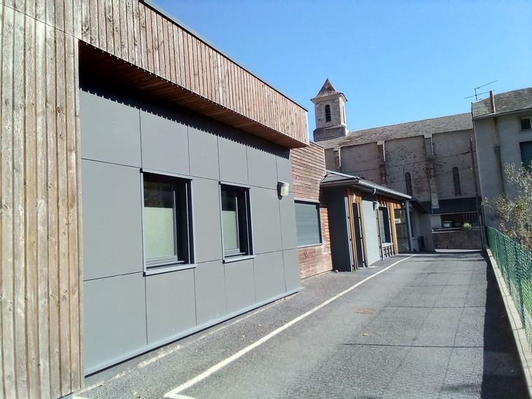
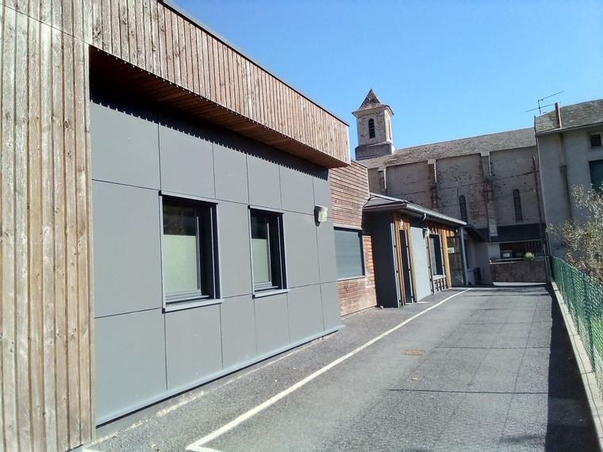

Ici, vous pouvez consulter des medecins generalistes, un kinésithérapeute, un dentiste, une pédicure - podologue, une sage-femme, une infirmiere ASALÉE et réaliser des soins à domicile avec le cabinet infirmier 2 IDEL, sur rendez-vous.
Nous sommes ouvert de 8H à 20H.
secrétariat : 05 63 50 40 18
Le samedi après-midi, le dimanche et les jours fériés, appelez le 3966
En cas d'urgence vitale, faites le 15
Notre équipe
Dr. Alain Pistre
Medecin généraliste
conventionné secteur 1
Sur rendez-vous.
: 05 63 50
40 18
Consultations:
les mardis de 14H à 19H
les mercredis toutes la journée
Visites:
les Mardis et Jeudis de 9H à 12H
Dr. Etienne Cornu
Medecin généraliste
conventionné secteur 1
Sur rendez-vous.
: 05 63 50
40 18
Consultations:
les lundis et vendredis de 14H à 19H
les mardis de 9H à 12H ; les jeudis toute la journée
Visites:
les lundis, mercredis et vendredis de 9H à 12H
les mardis de 14H à 19H
Dr. Christel Amiel
Chirurgien-dentiste
conventionné secteur 1
Sur rendez-vous.
: 05 63 50
40 18
Consultations:
Les Mardis de 9H à 12H
Les jeudis de 9H à 12H et de 13H30 à 17H00
sur rendez-vous
Lucie Albert
Psychologue
conventionné secteur 1
Sur rendez-vous.
: 06 42 32
34 51
Consultations:
le Samedi matin
Jean-Philippe Del Moral
Kinésithérapeute
conventionné secteur 1
Consultations et visites:
Sur rendez-vous.
: 05 63 50
40 18
Pascale Roque Valette
Pédicure - Podologue
conventionné secteur 1
Sur rendez-vous.
: 05 63 37
07 77
Consultations:
le 2ème jeudi de chaque mois
sur rendez-vous
Laurence Farrudja
Sage-femme
conventionné secteur 1
Sur rendez-vous.
: 05 63 50
40 18
Consultations:
Tous les Lundis
ou visites sur rendez-vous
Véronique Oustry
Infirmière ASALÉE
conventionné secteur 1
Sur rendez-vous.
: 07 71 83
37 76
Consultations:
Tous les jeudis
sur rendez-vous
Sophie Poirot
Infirmière à domicile
conventionné secteur 1
Cabinet Infirmier 2 IDEL
Sur rendez-vous.
: 05 63 50
46 56
Jacques Pagès
infirmier à domicile
conventionné secteur 1
Cabinet Infirmier 2 IDEL
Sur rendez-vous.
: 05 63 50
46 56
pharmacie de Vabre
12 Rue Celina Marc
81330 Vabre
Du lundi au vendredi :
de 9h à 12h30 et de 15h à 19h30 Samedi : de 9h à 13h